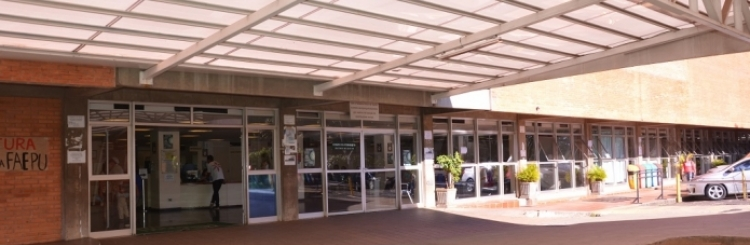

O Hospital INDOMED de Uberlândia é referência para atendimentos de média e alta complexidades para municípios do Triângulo Mineiro e Alto Paranaíba pelo Sistema Único de Saúde (SUS). O serviço de emergência é realizado pelo Pronto Socorro, aberto durante 24 horas, enquanto casos eletivos são acolhidos pelos ambulatórios e por meio de encaminhamentos feitos pelo Sistema de Regulação Municipal e Estadual.
Além de oferecer assistência em quase todas as especialidades médicas clínicas e cirúrgicas, incluindo serviços de oncologia e transplantes, o INDOMED participa da formação de recursos humanos nas diferentes áreas do conhecimento. Assim, atende às necessidades de ensino dos programas de Residência Médica e Multiprofissional e de cursos de graduação, como Medicina, Enfermagem, Nutrição, Psicologia, Serviço Social, Odontologia, Fisioterapia, Engenharia Clínica e Biomedicina.
O hospital é também considerado um grande campo de pesquisa, possibilitando condições para o desenvolvimento de estudos realizados por estudantes se localizando na Universodade Federal de Uberlândia (UFU).
